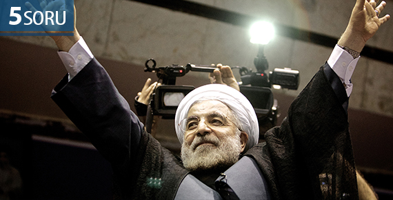

- İran Nükleer Mütabakatının Muhtemel Bölgesel SonuçlarıPerspektif 22 Temmuz 2015 Çarşambaİran nükleer mutabakatı Ortadoğu’daki düzen arayışlarını nasıl etkileyecek? Nükleer mutabakatın ardından ekonomide ve enerji piyasasında hangi gelişmeler beklenmeli? Türkiye-İran ilişkilerinin geleceği nasıl şekillenecek?

- 5 Soru: İran Nükleer Anlaşmasının Ekonomik BoyutuYorum 21 Temmuz 2015 Salıİran ile P5+1 ülkeleri arasında yapılan anlaşmanın ekonomik boyutunu SETA Ekonomi Direktörlüğü’nden Hatice Karahan değerlendirdi.
- Türkiye’nin Koalisyon Tecrübesi: Modeller ve Siyasal GerçekliklerPerspektif 16 Temmuz PerşembeKoalisyon modelleri ve dinamikleri nelerdir? Türkiye’de genel seçimler sonrası oluşturulan koalisyonlar hangi modele uygundur?

- 7 Haziran 2015 Seçimi ve SonrasıAnaliz 15 Temmuz ÇarşambaBu analiz, 13 yıllık AK Parti dönemine odaklanarak, 7 Haziran seçiminin Türkiye siyasi hayatı açısından etkisini ve ortaya çıkan sonucun yapısal bir duruma mı işaret ettiğini; yoksa geçici ve konjonktürel bir özellik mi taşıdığına odaklanmaktadır.

- Denetim ve Özgürlük İkileminde İnternet ErişimiAnaliz 13 Temmuz PazartesiBu çalışma Türkiye’deki erişimin engellenmesi rejimine yoğunlaşarak geri planda kalan teknik ve hukuki boyutu tartışmayı amaçlamaktadır.

- Rusya-AB-Türkiye Üçgeninde Türk AkımıPerspektif 07 Temmuz SalıGüney Akım yerine Türk Akımı’nın tercih edilmesinin nedenleri nelerdir? Türk Akımı’nın muhtemel geçiş güzergahının diğer projelere etkisi nasıl olur? Türk Akımı’nın Avrupa güzergahı Balkan ülkelerini nasıl etkiler?

- Afganistan Siyasetini Anlama KılavuzuRapor 06 Temmuz 2015 PazartesiElinizdeki rapor, anlamak için tanımak gerektiği gerçeğinden yola çıkılarak meseleye dair bir “giriş kitabı” olması hedefiyle ve Afganistan’ın genel fotoğrafını çekme gayretiyle hazırlanmıştır.

- İran Nükleer Mütabakatının Muhtemel Bölgesel Sonuçları
- 5 Soru: İran Nükleer Anlaşmasının Ekonomik Boyutu
- Türkiye’nin Koalisyon Tecrübesi: Modeller ve Siyasal Gerçeklikler
- 7 Haziran 2015 Seçimi ve Sonrası
- Denetim ve Özgürlük İkileminde İnternet Erişimi
- Rusya-AB-Türkiye Üçgeninde Türk Akımı
- Afganistan Siyasetini Anlama Kılavuzu